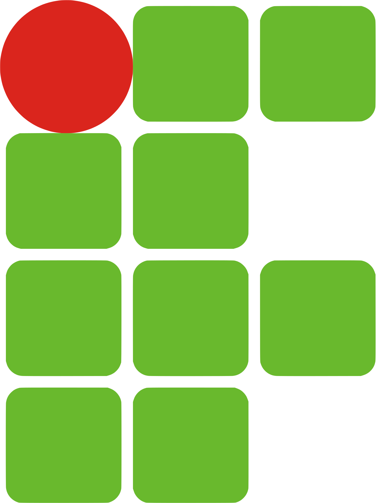

Sobre
Estudante de terceiro período do curso de Engenharia de Sistemas pela UNIMONTES. Amante de musica, livros e também café. Minha banda favorita é Linkin Park :)
Interesses
Tecnologia
Programação
Astronomia
Livros
Formação
Universidade Estadual de Montes Claros
Bacharelado em Engenharia de Sistemas
(2019-2024)

Instituto Federal do Norte de Minas Gerais - Campus Pirapora
Técnico em Informática integrado ao Ensino Médio
(2015-2017)Conhecimentos
Programação
Comecei a programar em 2015 aos 15 anos, mas durante esse tempo sempre foi por questões didáticas sem muito foco. Atualmente me dedico mais e sempre procuro aprimorar minhas habilidades.
Tenho conhecimentos em:
- * HTML
 ;
; - * CSS
 ;
; - * Javascript
 ;
; - * PHP
 ;
; - * C .
Livros
Alguns livros que já li e recomendo
- * Sapiens, uma breve história da humanidade;
- * Justiça, o que é fazer a coisa certa;
- * Uma breve história do tempo;
- * Sobre a brevidade da vida;
- * Rápido e devagar, duas formas de pensar;
- * A revolução dos bichos;
- * Superinteligência.